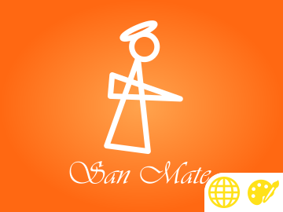
Marca · Web
San Mate
Amasijos San Mate
Identidad de marca y sitio web.
Hola, soy
Estudiante de Ingeniería de Sistemas y Computación — Universidad Nacional de Colombia
Desarrollo software desde 2009: empecé con sitios web y apps para BlackBerry y pasé a aplicaciones multiplataforma con HTML5 y PhoneGap/Cordova, como Sí Joven, ganadora de Vive Gobierno Móvil. Después trabajé como ingeniero de desarrollo en la industria y hoy soy contratista en la Universidad Nacional, donde estudio Ingeniería de Sistemas y Computación y hago parte del semillero de seguridad informática Uqbar. Mi formación en mecatrónica y electrónica me acerca al hardware y al IoT. Español nativo, inglés B2.
Desarrollo de software en una fábrica de envases y piezas plásticas en Bogotá.
Aplicaciones multiplataforma (Android, iOS, Windows, BlackBerry, Firefox OS) con HTML5, CSS3, JavaScript y PhoneGap/Apache Cordova. Diseño y despliegue de sitios web responsive, SEO y marketing digital para emprendedores. Metodología Scrum y control de versiones con Git.
Etapa práctica SENA. Diagnóstico, mantenimiento y reparación de equipos electrónicos, programación de microcontroladores PIC y mantenimiento preventivo de elevadores como técnico.
Apoyo a proyectos de emprendimiento.
Administración del sitio y redacción especializada en tecnología.
Integrante del semillero de Seguridad Informática Uqbar.
Diseño y desarrollo de prototipos mecatrónicos, integración de soluciones automatizadas, sistemas neumáticos e hidráulicos y programación de equipos de automatización.
Análisis de requisitos, diseño y construcción de sistemas de información con buenas prácticas de calidad de software.
Estudios interrumpidos; la carrera se retomó en 2019 en la Universidad Nacional de Colombia.
Criptografía, redes, sistemas operativos, reconocimiento y enumeración, explotación y post-explotación, desarrollo de exploits.

Amasijos San Mate
Identidad de marca y sitio web.
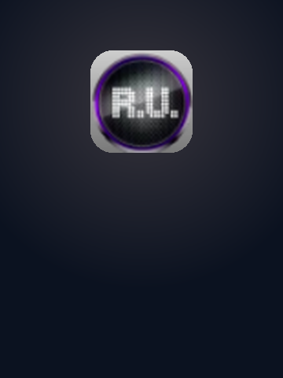
Gabriel León
App del sitio ReinoUrbano.com.
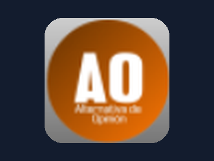
Santiago Rincón
App del sitio de opinión AlternativaDeOpinión.com.
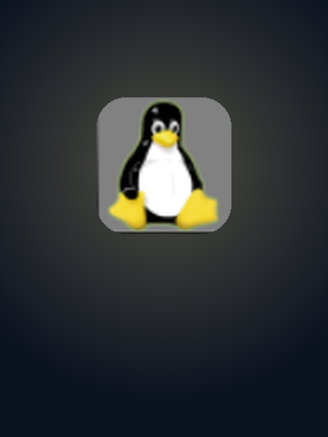
Marco Tobón
App del blog sudo-apt-get-linux.blogspot.com.
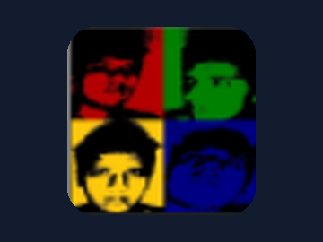
Proyecto personal
App de mi blog de noticias de tecnología.
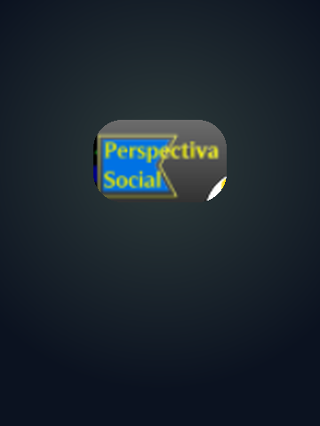
Sebastian Árias
App del blog Perspectiva Social.
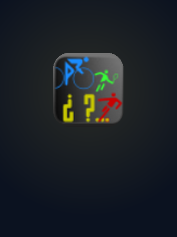
Proyecto personal
App del blog de resultados deportivos de Colombia.
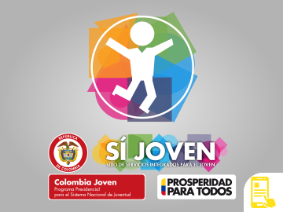
Presidencia de la República · Colombia Joven · MinTIC
App del programa Colombia Joven de la Presidencia de la República.
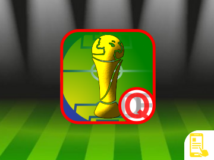
Proyecto personal
Resultados de la Copa Mundial de la FIFA.
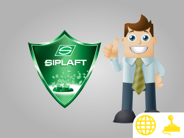
Servientrega S.A.
Juego web corporativo.
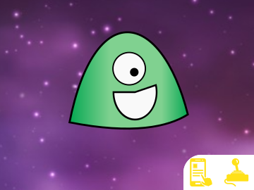
Proyecto personal colaborativo
Juego multiplataforma.
2.º puesto
Reto: protección de santuarios naturales.
1.er puesto
App Sí Joven para iOS y Android.
2.º puesto
Líder de desarrollo móvil del equipo.
3.er puesto
“Agricultura Urbana”: app para que habitantes de Soacha creen su propio cultivo hidropónico y comercialicen sus productos.
2.º puesto
Reto “Súmate” de la Unidad para las Víctimas.